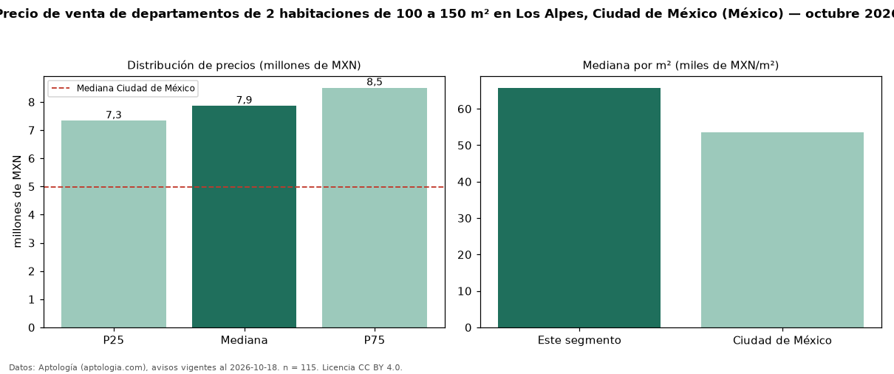

Precio de venta de departamentos de 2 habitaciones de 100 a 150 m² en Los Alpes, Ciudad de México (México) — octubre 2026
En Los Alpes, Ciudad de México (México), la mediana de precio de venta de departamentos de 2 habitaciones de 100 a 150 m² es MXN 7,86 millones, según 115 avisos vigentes. Frente a la mediana de los departamentos de 2 habitaciones en venta de Los Alpes (MXN 7,01 millones, n = 288), queda 12 % por encima; este segmento reúne el 40 % de esos avisos. Por metro cuadrado, la mediana es MXN 65.763/m² (n = 115), 4 % por debajo de los departamentos de 2 habitaciones en venta de Los Alpes (MXN 68.333/m²). El área mediana anunciada es 120 m². La mediana de todos los departamentos en venta de Ciudad de México es MXN 4,99 millones (+57 % de diferencia). La mitad central de los avisos va de MXN 7,33 millones a MXN 8,50 millones (razón 1,2), una dispersión baja. Datos: Aptología (aptologia.com), CC BY 4.0 — https://www.aptologia.com/. Archivos: PDF, CSV con las cifras y gráfica PNG.

| Avisos únicos | 115 |
|---|---|
| Percentil 25 | COP 7.330.453 |
| Mediana | COP 7.859.227 |
| Percentil 75 | COP 8.501.943 |
| Mediana por m² | COP 65.762 |
Fuente: avisos vigentes de portales inmobiliarios recopilados por Aptología, deduplicados (mínimo 30 avisos únicos por celda). Precios pedidos, no cerrados. Fecha: 2026-10-18.